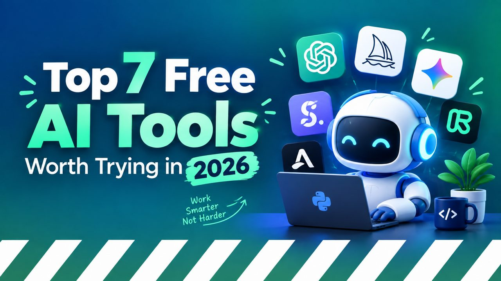

Top 7 Free AI Tools Worth Trying in 2026
The "free AI tools" landscape in 2026 is a minefield of demos that don't actually work, signup walls that appear mid-task, and "free trials" that charge you on day eight. This list is the opposite — seven tools that are genuinely useful, genuinely free, and that you can start using in under five minutes each.

The picks below are organised by what each tool is genuinely best at, not by hype. "Free" here means a meaningful free tier — enough daily usage to actually get work done — not "you can sign up and look at the landing page".
1. Google Gemini (free tier)
Best for: general Q&A, research, writingGoogle's flagship chatbot has the most generous free tier of any major model in 2026 — long context windows, image understanding, web access, and a clean interface at gemini.google.com. If you have a Google account, you already have access.
What it does well: factual questions with citations, summarising long documents, drafting emails, brainstorming. What it does less well: pure creative writing where ChatGPT still has a slight edge.
2. Claude (free tier)
Best for: long-form writing, careful reasoningAnthropic's Claude has a free tier at claude.ai that gives you access to the same model powering the paid version, just with usage limits. The free tier's daily allowance is enough for most people to do real work, not just chat.
What it does well: long, considered responses; explaining complex things clearly; following multi-step instructions without losing the thread. What it does less well: real-time web access (no free web search yet).
3. Microsoft Bing Image Creator
Best for: AI image generation, no signup wallPowered by DALL-E 3, Bing Image Creator is the only major AI image generator that's genuinely free with no daily cap on a Microsoft account. You type a description, it gives you four images. The quality is what you'd expect from a paid tool.
What it does well: photorealistic images, illustrations, product mockups, book covers. What it does less well: complex multi-character scenes, text inside images.
4. GitHub Copilot (free for students / OSS)
Best for: code completion in your editorCopilot's individual free tier ended in 2024, but if you are a student, a teacher, or maintain an open-source project, the full Pro plan is still free. There is also Copilot in VS Code as a limited chat assistant that everyone can use without a paid plan.
What it does well: writing boilerplate, explaining unfamiliar code, generating tests. What it does less well: large architectural suggestions — it works best line-by-line.
5. Perplexity (free tier)
Best for: research with real citationsPerplexity is an AI search engine — you ask a question, it gives you an answer with footnotes that link to actual sources. The free tier uses a strong model and shows the sources it used to answer. The paid Pro tier unlocks more models and more "Pro" searches.
What it does well: fact-checking, finding primary sources, comparing multiple products. What it does less well: creative tasks where you don't need citations.
2. Whisper (open source)
Best for: local speech-to-text, transcriptionOpenAI's Whisper is a free, open-source speech recognition model. Run it locally on your computer and it transcribes audio files with accuracy that beats most paid services — for free, forever, with no data leaving your machine. Several free apps package it nicely.
What it does well: transcribing interviews, meetings, lectures, podcasts in 99 languages. What it does less well: real-time streaming (you upload files).
7. Google NotebookLM (free)
Best for: working with your own documentsNotebookLM lets you upload your own PDFs, Google Docs, and web pages, then ask an AI questions about them. Unlike a generic chatbot, it grounds every answer in the documents you uploaded — and refuses to answer if your sources don't support it. Free with a Google account.
What it does well: studying for exams, summarising research papers, extracting key quotes from long documents. What it does less well: open-ended questions where you want the model's general knowledge.
How to choose
If you only sign up for one thing
Get a free Google Gemini account and a free Claude account. Between them you have a general-purpose assistant and a writing assistant, both with enough daily allowance to do real work. Add Bing Image Creator when you need an image, and skip everything else until you actually need it.
If you write code, also install the Copilot extension in VS Code (free tier). If you do any research at all, give Perplexity one afternoon — you will not go back to plain Google.
What about the ones that didn't make the list?
- ChatGPT free tier — still good, but Gemini's free tier is now more generous on context and features.
- Meta AI, Mistral, Le Chat — all real, all free, all worth a look, but the seven above cover the common needs.
- Midjourney, Stable Diffusion, Flux — powerful, but not on this list because the free paths (Discord trial, local install) require more setup than the other picks.
One last thing
Every "free AI" company is racing to find a way to charge you. The tools on this list are free today (as of September 2026). They will not all be free forever. If you find one you rely on, consider paying for the paid tier at some point — the economics of training and running these models is real, and the free tiers exist because somebody is paying somewhere.